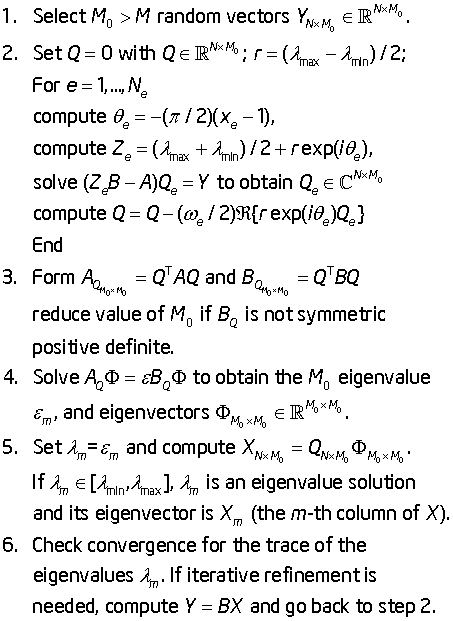
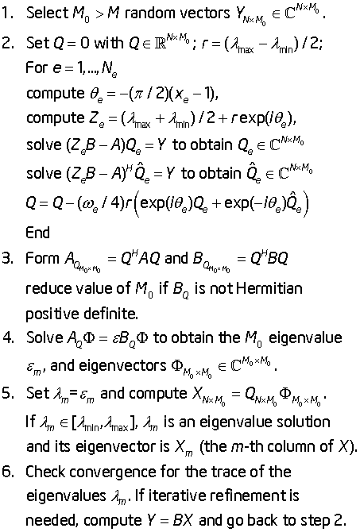

Intel® oneAPI Math Kernel Library Developer Reference - Fortran
The Extended Eigensolver functionality is a set of high-performance numerical routines for solving symmetric standard eigenvalue problems, Ax=λx, or generalized symmetric-definite eigenvalue problems, Ax=λBx. It yields all the eigenvalues (λ) and eigenvectors (x) within a given search interval [λ min , λ max]. It is based on the FEAST algorithm, an innovative fast and stable numerical algorithm presented in [Polizzi09], which fundamentally differs from the traditional Krylov subspace iteration based techniques (Arnoldi and Lanczos algorithms [Bai00]) or other Davidson-Jacobi techniques [Sleijpen96]. The FEAST algorithm is inspired by the density-matrix representation and contour integration techniques in quantum mechanics.
The FEAST numerical algorithm obtains eigenpair solutions using a numerically efficient contour integration technique. The main computational tasks in the FEAST algorithm consist of solving a few independent linear systems along the contour and solving a reduced eigenvalue problem. Consider a circle centered in the middle of the search interval [λ min , λ max]. The numerical integration over the circle in the current version of FEAST is performed using Ne-point Gauss-Legendre quadrature with xe the e-th Gauss node associated with the weight ωe. For example, for the case Ne = 8:
The figure FEAST Pseudocode shows the basic pseudocode for the FEAST algorithm for the case of real symmetric (left pane) and complex Hermitian (right pane) generalized eigenvalue problems, using N for the size of the system and M for the number of eigenvalues in the search interval (see [Polizzi09]).
The pseudocode presents a simplified version of the actual algorithm. Refer to http://arxiv.org/abs/1302.0432 for an in-depth presentation and mathematical proof of convergence of FEAST.
|
|
 |
 |